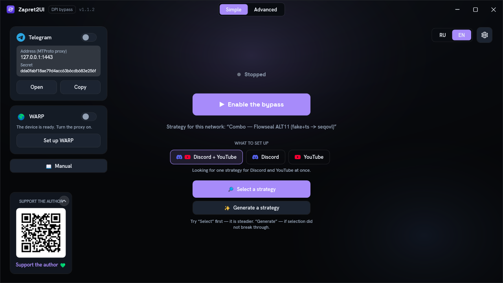

Zapret2UI documentation
How bypassing blocks works, how to use the program, and how to build a strategy for your own provider.
What this is
Zapret2UI is a Windows application that drives the winws2 engine from the
bol-van/zapret2 project. The engine alters the first
packets of your connections so that the provider's equipment cannot tell which site you are
connecting to, while the server itself receives everything correctly. That is what reopens Discord
and YouTube when they are blocked by site name.
The engine itself is configured with long argument strings, and finding a working combination by hand is hard. The program takes that over: nine ready-made strategies, automatic selection, generation of a personal strategy for your network, diagnostics and a built-in Telegram proxy.
This is zapret2, not the ordinary zapret. There are two engines, both by the same author:
the first (winws), which most guides and builds grew around, and the second
(winws2), which this program drives. Their strategy formats differ, and configs for
the first one will not run here. The differences, and how to tell one from the other:
How it works.
First time here? You do not need to read all of this. Open the Quick start: the first two steps are usually enough. Come back if something does not work or you get curious about how it is put together.

Documentation sections
Eight pages, from "just give me Discord back" to writing your own strategies.
How it works
Theory without formulas: why blocking can be bypassed at all, and what exactly the engine does to your packets.
- SNI and DPI
- splitting
- fake packets
- fooling
- zapret2 versus zapret
- why it is not a VPN
Quick start
Download it, run it as administrator, press the button. And what to do if it does not work the first time.
- requirements
- installation
- five steps
- selection and generation
- autostart
Interface
Every screen with a screenshot: what each button does, what the colours mean, where to look when something fails.
- eight tabs
- diagnostics
- host lists
- Telegram proxy
- every setting
- files on disk
Strategies explained
All nine built-in strategies line by line: what every argument does and why the strategy is assembled that way.
- the shared skeleton
- each one explained
- how they differ
- which to pick for which symptom
WARP and changing your address
The tunnel with the client built in: when you need the bypass, when you need another country, and why you cannot pick one.
- one switch
- why the handshake is cut
- options
- carrying it to a phone
Reference
The winws2 argument format: everything you need to write your own strategy without hitting exit code 87.
- command structure
- desync verbs
- fooling
- position markers
- tokens
- blobs
- orchestrators
Troubleshooting
What to try in order, the engine's exit codes, and the case where "diagnostics is all green but the site still will not open".
- what to do in order
- common situations
- error codes
- frequent questions
Support
How to support the project with money, and how to help without it: feedback about providers is worth more than donations.
- donations
- the author's VPN
- feedback
- issues and stars
Credits
Everyone the program stands on, with what specifically came from where: the engine, the strategies, the proxy, the DPI check method.
- bol-van
- Flowseal
- hyperion-cs
- RaccoonLaptop
- fonts
- licences
Where to get the program
A single Zapret2UI.exe on the
releases page. No installation,
no .NET to install. The engine is downloaded on first launch and verified against its SHA-256
checksum.
You need Windows 10 or 11 and administrator rights: the engine loads a network driver into the kernel. The built-in Telegram proxy does not need administrator rights. Details in the Quick start.
Other sources
-
The official engine manual
The complete
winws2reference from the engine's author, in English. The primary source for every verb and parameter. -
The Zapret2UI repository
Source code, releases and the issue tracker. It also carries
manual_zapret2UI.en.md: the same material as here, as a single document for reading offline. - Telegram channel Release news and discussion of what works for whom and with which provider. Mostly in Russian.
- Flowseal / zapret-discord-youtube A collection of working strategies for the first zapret. Some of the built-in strategies here are translations of those onto the second-generation engine.